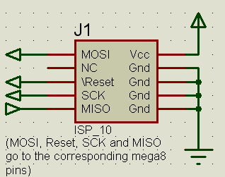

The ISP circuit
This board uses the standard AVR ISP connector (10-pin version) for downloading. The ISP connector requires no additional circuit if no external SPI slaves are connected to the mega8's hardware SPI.

If you wish to use external slaves and maintain ISP capability, Atmel recommends adding series resistors of 4.7K in the SPI lines (mega8 -> ISP connector -> resistor -> slave).